Mirar cada una de estas fotos y videos me recuerda por qué luchar por ti vale cada segundo de mi vida. Desde cuando te cocino, cuando me mandas besitos, cuando te duermes en mi pecho o cuando me sonríes con esa luz única. Perdón por mis errores, no te quiero perder.
🩺
El Gran Libro de los Chequeos 📖
Paciente: Mi corazón arrepentido.
Diagnóstico: Sufre por haberte lastimado y te necesita más que al aire.
Tratamiento: Abrazarte muy fuerte, cuidarte todos los días y nunca soltar tu mano.
✨
💡
La Luciérnaga Ray & Evangeline 🌟
«Miren hacia arriba... esa es mi Evangeline, la estrella más hermosa del cielo.»
Para mí, tú eres esa estrella que ilumina mi noche más oscura.
✨
🌹
La Rosa Eterna de La Bella y la Bestia 🥀
«Aunque caiga el último pétalo en el reloj del tiempo, mi amor por ti jamás se marchitará.»
Tú viste al hombre detrás de mis imperfecciones.
✨💛
🌸
Nuestras 20 Fotos Especiales
Toca cualquier polaroid para verla en pantalla completa con todo mi amor ♡
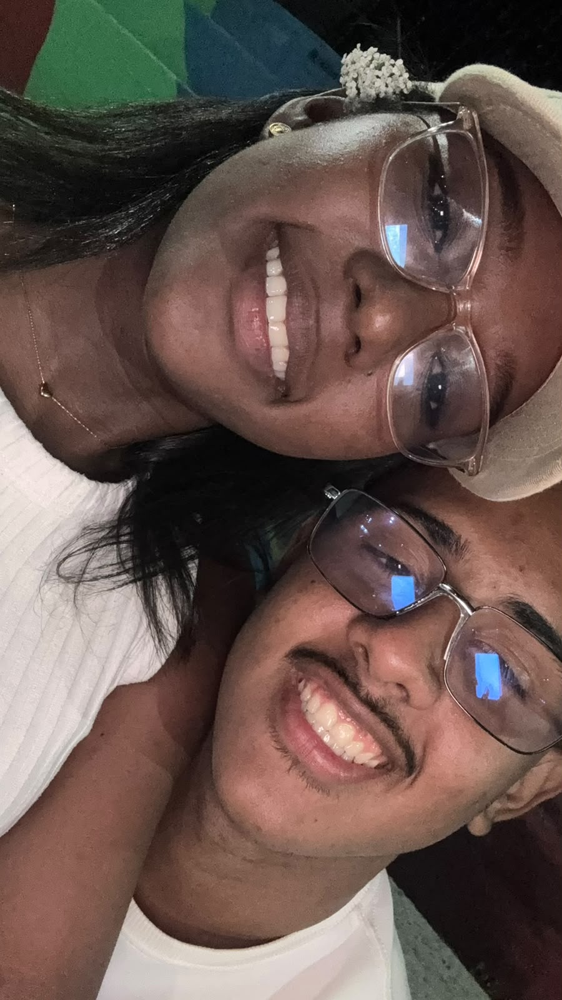
Recuerdo #01 ♡
Nuestra foto favorita con gafas
Mira esa sonrisa de los dos. Cuando estoy a tu lado siento una paz que no existe en ninguna otra parte. Donde soy más feliz: a tu lado.
🔍 Toca para ampliar
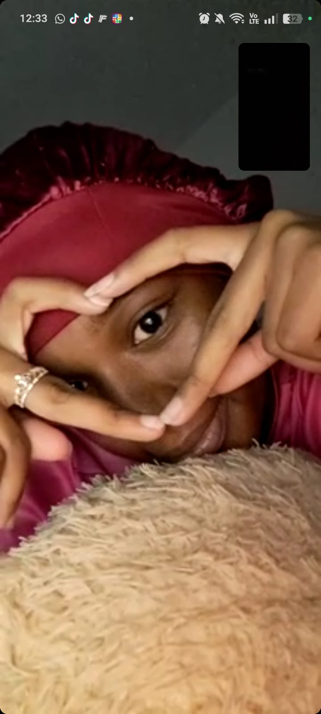
Recuerdo #02 ♡
Tus ojitos y tu corazón a las 12:33
Eran las 12:33 de la noche en videollamada e hiciste ese corazón con tus manitas alrededor de tus ojitos. Ese corazón lo llevo en el alma.
🔍 Toca para ampliar
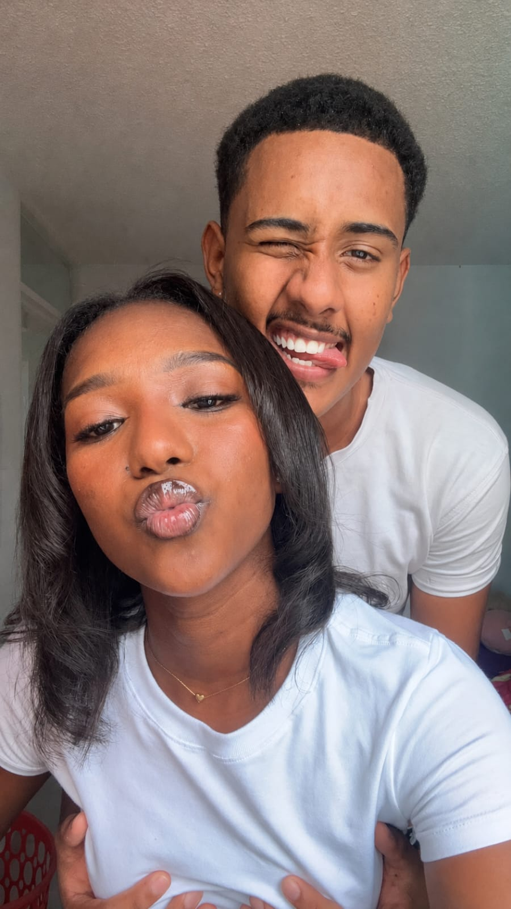
Recuerdo #03 ♡
Camisetas blancas a juego y risas
Tú tan coqueta mandando un besito con tus labios brillantes y yo detrás haciéndote reír. Esa chispa es lo más valioso que tengo.
🔍 Toca para ampliar
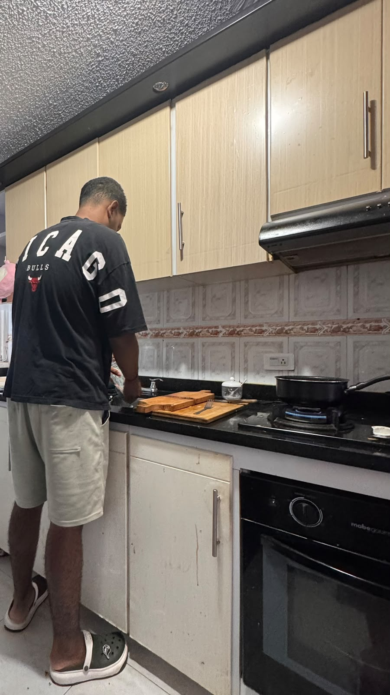
Recuerdo #04 ♡
Cocinando con amor para ti
En la cocina con mi camiseta de los Bulls preparándote de comer mientras me tomabas esta foto. Me encanta consentirte y verte feliz.
🔍 Toca para ampliar
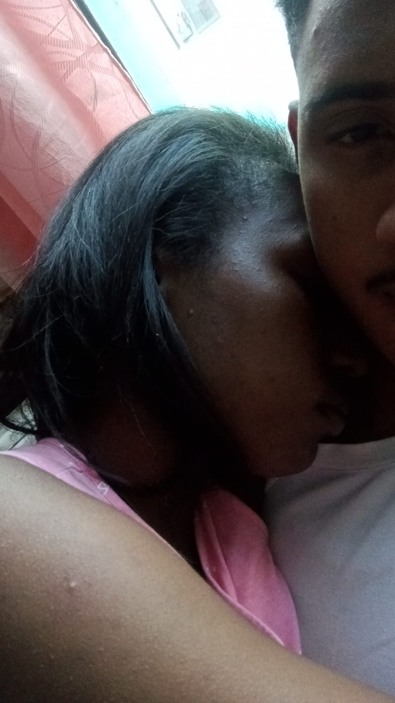
Recuerdo #05 ♡
Dormidita en mi pecho
Sentir tu cabecita descansando sobre mí y tu respiración tranquila es la sensación más tierna del universo. Mi lugar sagrado.
🔍 Toca para ampliar
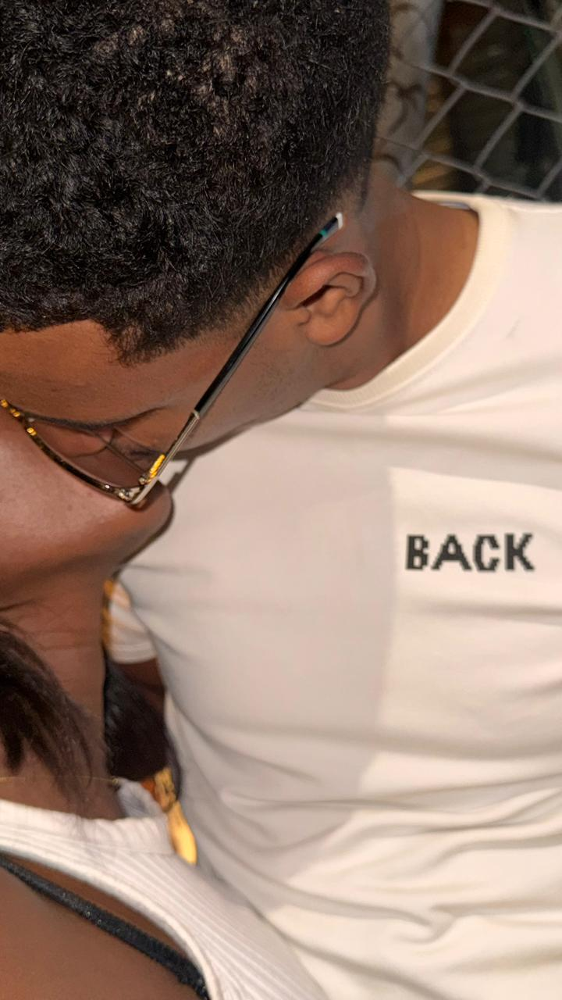
Recuerdo #06 ♡
Un beso que detiene el mundo
Cada beso tuyo me devuelve la vida y me llena el corazón. Mi único deseo es tenerte entre mis brazos para siempre.
🔍 Toca para ampliar
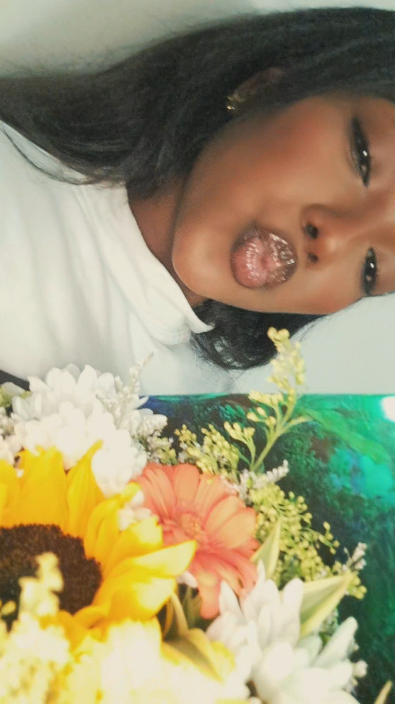
Recuerdo #07 ♡
Tú con tu ramo de girasoles
La verdadera flor del jardín eres tú. Verte sonreír con flores es contemplar la creación más hermosa de Dios.
🔍 Toca para ampliar
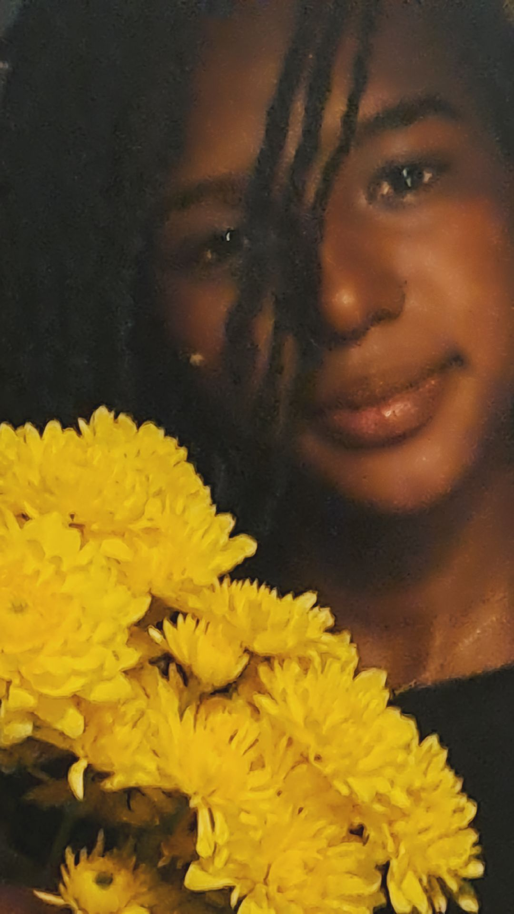
Recuerdo #08 ♡
Tu ternura con flores amarillas
Esa mirada suave con las flores amarillas iluminando tu carita... Eres un sueño hecho realidad.
🔍 Toca para ampliar
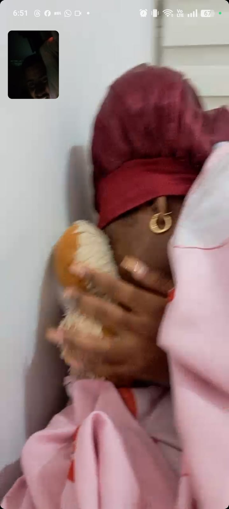
Recuerdo #09 ♡
Noches de videollamada y peluche
Dormirnos hablando por videollamada mientras abrazas tu peluche. La distancia se hace nada cuando estamos conectados.
🔍 Toca para ampliar
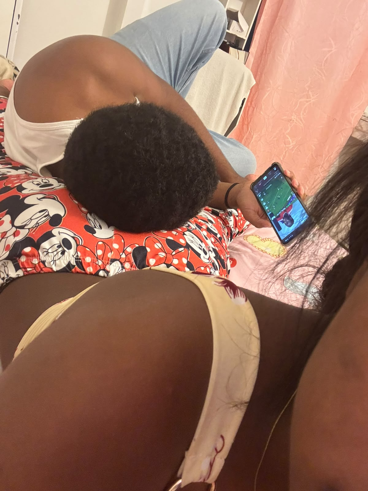
Recuerdo #10 ♡
Acostaditos viendo videos en paz
Tardes acostados juntos, hablando de todo y de nada, con esa confianza única que solo existe entre tú y yo.
🔍 Toca para ampliar
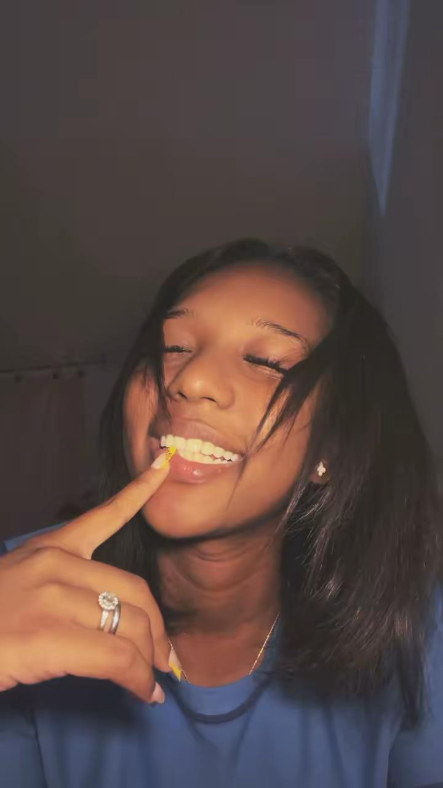
Recuerdo #11 ♡
Tu sonrisa que ilumina mis días
No hay nada en este planeta más hermoso que verte reír a carcajadas. Tu felicidad es mi felicidad.
🔍 Toca para ampliar
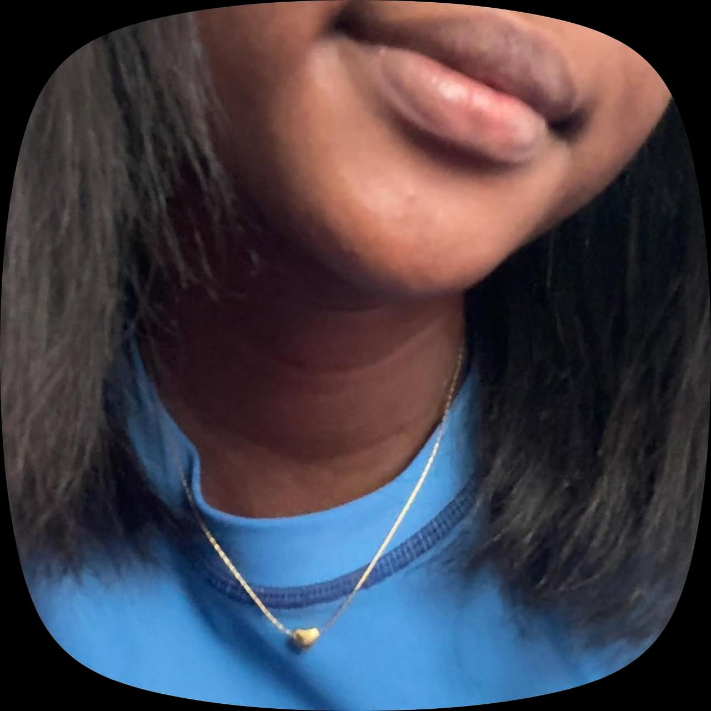
Recuerdo #12 ♡
El corazoncito dorado en tu pecho
Cerca de tu corazón, donde siempre quiero estar. Eres mi consentida y mi persona favorita.
🔍 Toca para ampliar
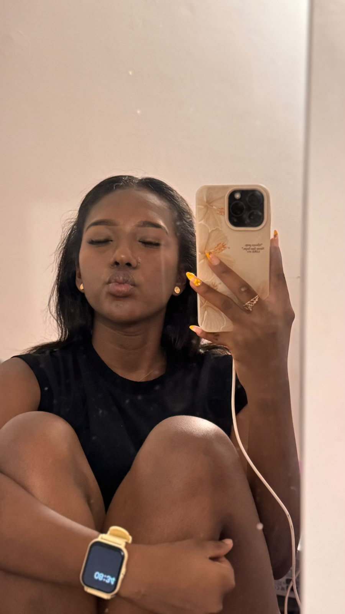
Recuerdo #13 ♡
Frente al espejo con tu corona
Mandando un piquito frente al espejo con tu anillo de corona. Mi verdadera y eterna princesa.
🔍 Toca para ampliar
Recuerdo #14 ♡
Tus ojitos dulces de cerca
Esa mirada dulce que me desarma y me recuerda lo afortunado que soy de tenerte a mi lado.
🔍 Toca para ampliar
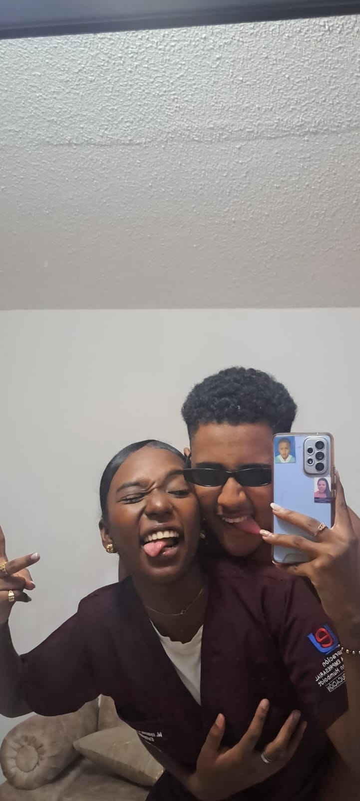
Recuerdo #15 ♡
Momentos espontáneos llenos de vida
Sin poses ni filtros, solo tú y yo siendo completamente nosotros mismos. Cómplices en cada risa.
🔍 Toca para ampliar
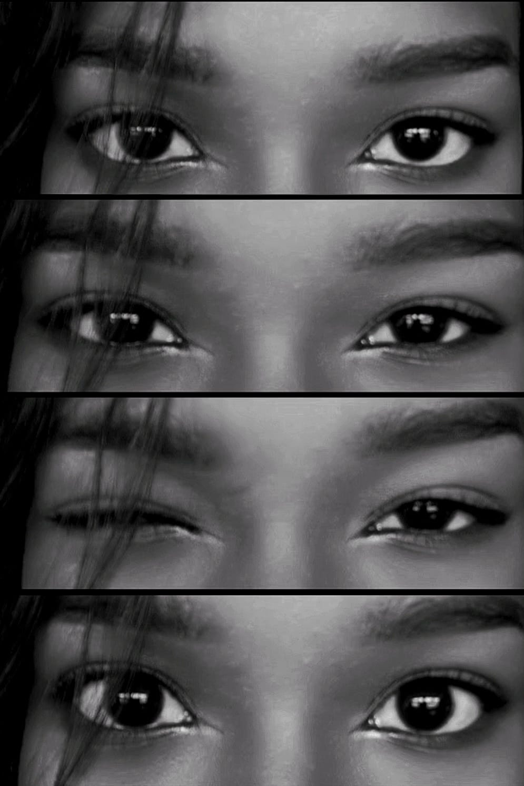
Recuerdo #16 ♡
Nuestras locuras compartidas
Porque a tu lado hasta el instante más sencillo se convierte en una aventura que guardo en el corazón.
🔍 Toca para ampliar
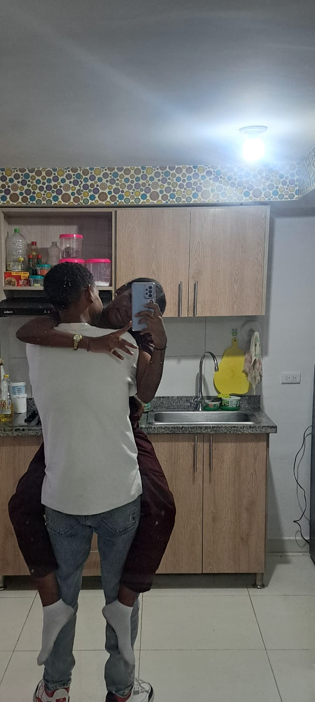
Recuerdo #17 ♡
Juntos en cada paso del camino
Construyendo un amor real, que aprende de los errores y se hace más fuerte cada día.
🔍 Toca para ampliar
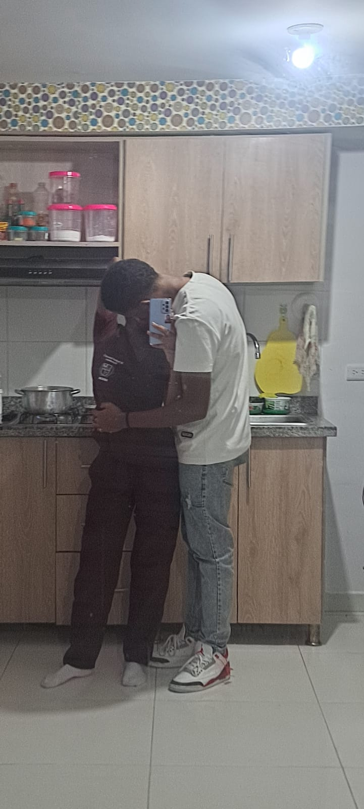
Recuerdo #18 ♡
Mirarte y agradecer a la vida
No hay paisaje en el mundo que se compare a la paz que me da verte a los ojos.
🔍 Toca para ampliar
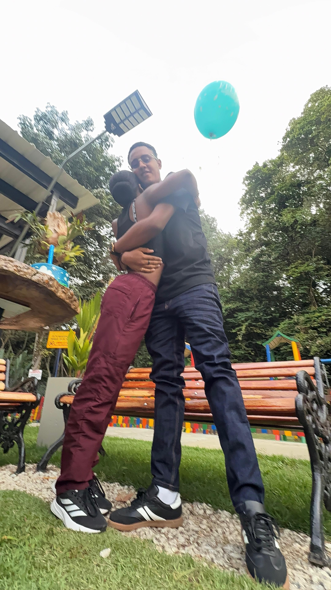
Recuerdo #19 ♡
Un abrazo de esos que no se olvidan
Apretados fuerte, sintiendo que no hace falta nada más en el mundo porque estás tú.
🔍 Toca para ampliar
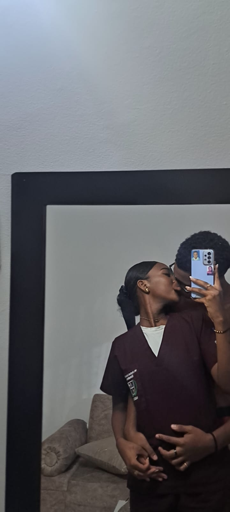
Recuerdo #20 ♡
Para siempre mi pequeña princesa
Te elijo hoy, te elegiré mañana y te elegiré siempre. Perdóname, no te quiero perder jamás.
🔍 Toca para ampliar
🎬Nuestra Película Juntos
Nuestros Videos Favoritos (8 Momentos Especiales)
Toca cualquiera de los momentos abajo para revivir nuestros videos en la pantalla:
▶ Momento 1: Risas y Recuerdos Inolvidables
🌻Tú eres mi sol en días nublados
El Girasol que Florece por Ti
Los girasoles siempre buscan la luz... y mi corazón siempre te busca a ti. Toca el girasol o el botón para abrir sus pétalos y descubrir cada razón por la que te adoro:
🌻✨
Pétalos abiertos: 0 / 8
✨
¡Toca el botón o el girasol para abrir el primer pétalo!
🍀Juego Interactivo
Tarjeta «Raspa y Gana» de Nuestro Amor
Usa tu dedo (en el celular) o el ratón para raspar la lámina dorada y descubrir la sorpresa que tengo para ti:
🏆 ¡PREMIO MAYOR! 💖
¡Te has ganado mi corazón por siempre!
Vale por: Un millón de besitos, abrazos eternos cada noche y la promesa inquebrantable de cuidarte y respetarte siempre.
👑 Certificado oficial para mi Princesa Isabel ♡
🍯Vales Reales e Infinitos
El Frasco Mágico de Promesas y Vales
Este frasco contiene vales y promesas canjeables cuando tú quieras. Toca el frasco para sacar un papelito y leerlo:
📜🎟️💌✨
Vales de Isabel ♡
👆 ¡Toca el frasco!
VÁLIDO DE POR VIDA
🎟️VALE OFICIAL
¡Toca el frasco para tu primer vale!
Descubre promesas de amor, días de consentirte y vales sin fecha de vencimiento.
Vales leídos: 0 de 10
🩹
El Botiquín para Sanar Nuestro Amor
Toca cada curita para descubrir una razón por la que te pido perdón y elijo quedarme a tu lado:
🩺💓
El Amor-ómetro de la Doctora Juguetes
Instrumento oficial de la clínica para medir cuánto te amo:
💖
1000% ¡EXPLOSIÓN! 🔥100% Amor eterno75% Loco por ti50% Mucho amor25% Cariño0%
0%Índice de Amor
Presiona el botón para iniciar el chequeo médico...
📋 RECETA MÉDICA OFICIALDra. Juguetes 🩺
Paciente: Princesa Isabel 👑
Diagnóstico: Desbordamiento crítico de amor y ternura incalculable. Nivel supera los límites de la ciencia (1000%).
Tratamiento prescrito: 1 beso de buenos días, 3 abrazos apretados diarios, mimitos cada noche y que Charly te demuestre siempre que eres su mayor tesoro.
🌸
Un poema para pedirte perdón
Si tuviera que elegirte de nuevo
Te elegiría en la cocina, en la cama viendo el teléfono,
te elegiría en las videollamadas de madrugada y en cada despertar.
Te pediría perdón mil veces si con eso limpio cualquier duda,
y te abrazaría tan fuerte como cuando duermes en mi pecho.
Como Ray miraba a su amada Evangeline en el cielo,
sé que entre millones de personas en el mundo,
la mía solo sabe pronunciar tu nombre.
Con todo mi amor y arrepentimiento sincero, siempre para ti.
🎙️Mensaje de mi Propia Voz
Escucha lo que mi corazón tiene que decirte
A veces las palabras escritas no alcanzan... por eso grabé esto con toda mi sinceridad y amor solo para ti:
🎙️
Charly ♡0:00 / 1:19
Toca ▶ para escuchar mi voz con el corazón💖✨
Para mi amada Isabel 💌Toca el sello para desdoblar
💌
Una carta desde lo más profundo
Perdóname, mi amor.
Escribo esto con el corazón en la mano. Sé que he cometido errores y me duele pensar que te hice dudar de cuánto te amo o de lo importante que eres para mí. No pretendo justificarme, porque no hay justificación para hacerte sentir mal.
Solo quiero pedirte una oportunidad para demostrarte que puedo aprender, que puedo ser mejor para ti y que mi intención diaria es cuidarte, respetarte y hacerte sonreír como en esa foto donde los dos tenemos gafas y sonreímos felices.
No te quiero perder. Eres mi princesa y mi sueño cumplido.
¿Me perdonas, mi pequeña princesa? 🥺👉👈
🎉💖💍✨
¡GRACIAS POR TU CORAZÓN, MI AMOR!
Prometo cuidarte, respetarte, cocinarte delicioso y hacerte la mujer más feliz del mundo cada día. ¡No te fallaré jamás!